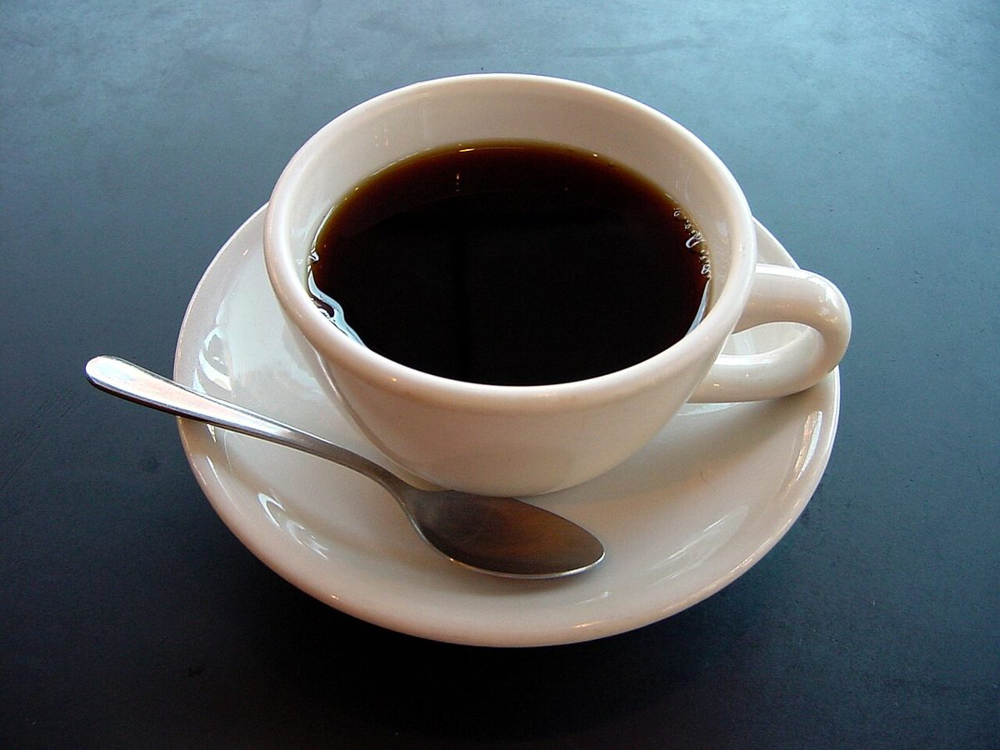
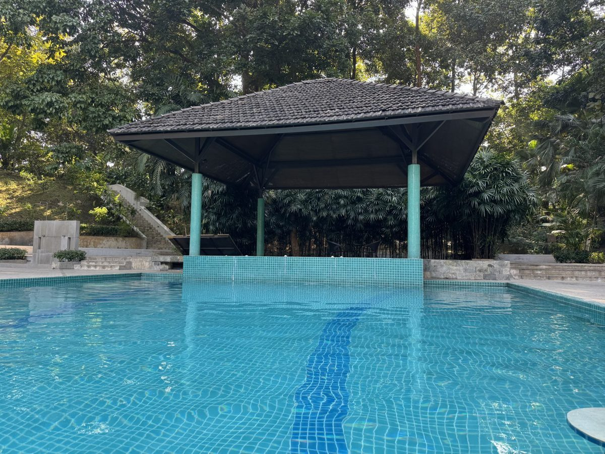

No.02 店のこと
店のこと
確認できているのは、所在地・電話番号・Instagramのアカウントだけです。
「想像してみる」の部分は制作側が想像して書いたもので、お店の実際の様子・考え・メニューとは関係がありません。
確認できていること
- 店名は「MISSING PIECE」、業種はカフェ
- 所在地は岩手県花巻市桜町1丁目391-6(〒025-0084)
- 電話は0198-41-3241
- Instagramは @cafe.missingpiece

01
02まだ分からないこと
- 営業時間・定休日: 準備中
- メニュー・価格: 準備中
- ご予約・駐車場: 準備中
 03
03張り替え待ち写真は貴店ご提供に差し替え
想像してみる
この壁の読み方
ホームページの完成形も、タイルの壁に似ているかもしれません。確認できた情報の1枚1枚を貼り、まだ分からないところは空けておく。このサンプルでは、分からないことを憶測で埋めず、朱色の枠として残しています。制作側の連想で、お店の理念・由来とは無関係読み方です。